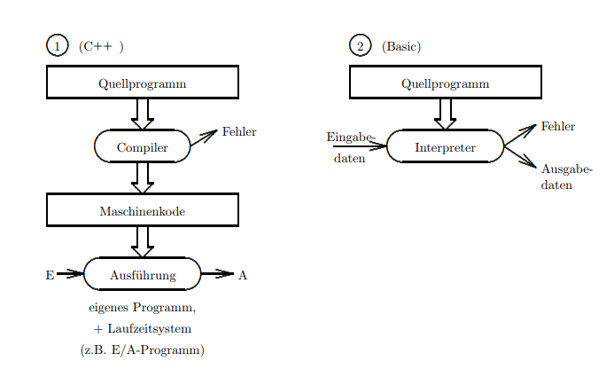

Development Cycle
We're still in the realm of the development cycle (see post to last week's lecture) and continue with the next step which is "Implementation".
Implementation
Implementation is the step where the draft from the other steps is brought into a format that can be processed by the machine/computer. There's a concrete technical basis that has to be considered:
- detailed language specification ("detaillierter Sprachumfang")
- implementation specifications ((co)domains, etc.)
- operating system
- usable standard software (eg libraries for arithmetic, graphics, string & list manipulation and data management)
Translation & Integration
Here're some possible procedures when translating source code from programming languages:

(Software) Quality Assurance
Another crucial step in the development cycle is Quality Assurance (QA). It is good to prove the correctness of the program. To do so (or come close to that) testcases with predefined test data should run. The expected results should be known beforehand and then be compared with the actual results to prove correctness.
There are different levels of proving correctness:
- the program is (syntactically) translated without errors (and no crashes when ran)
- existence of certain test data that is handled correctly by the program
- typical test data is correctly handled
- uncommon and conciously chosen critical or odd test data (eg extreme values) are handled correctly
- all possible input values are handled correctly
- additionally: meaningful response to typical cases of incorrect data
- additionally: meaningful response to all possible cases
In practice point 4./6. are goals that should be targeted to realize.
Quality assurance has to happen in all development design phases:
- specification → coordination with users
- design → review by experts
- implementation → source code reviews by other developers and/or mathematical proofs
- program → correctness proof by executing the program and tests (see above)
Algorithms and Data Structures
This is the last big/major chapter in the script.
Recursive Functions
The pages in the script cover the fibonacci sequence and the towers of hanoi which we already looked at in lectures from "Algorithms & Programming". So you can read the related blog posts to that and/or look at the CS01 slides from page 71 to 77. I won't repeat that stuff again here :P